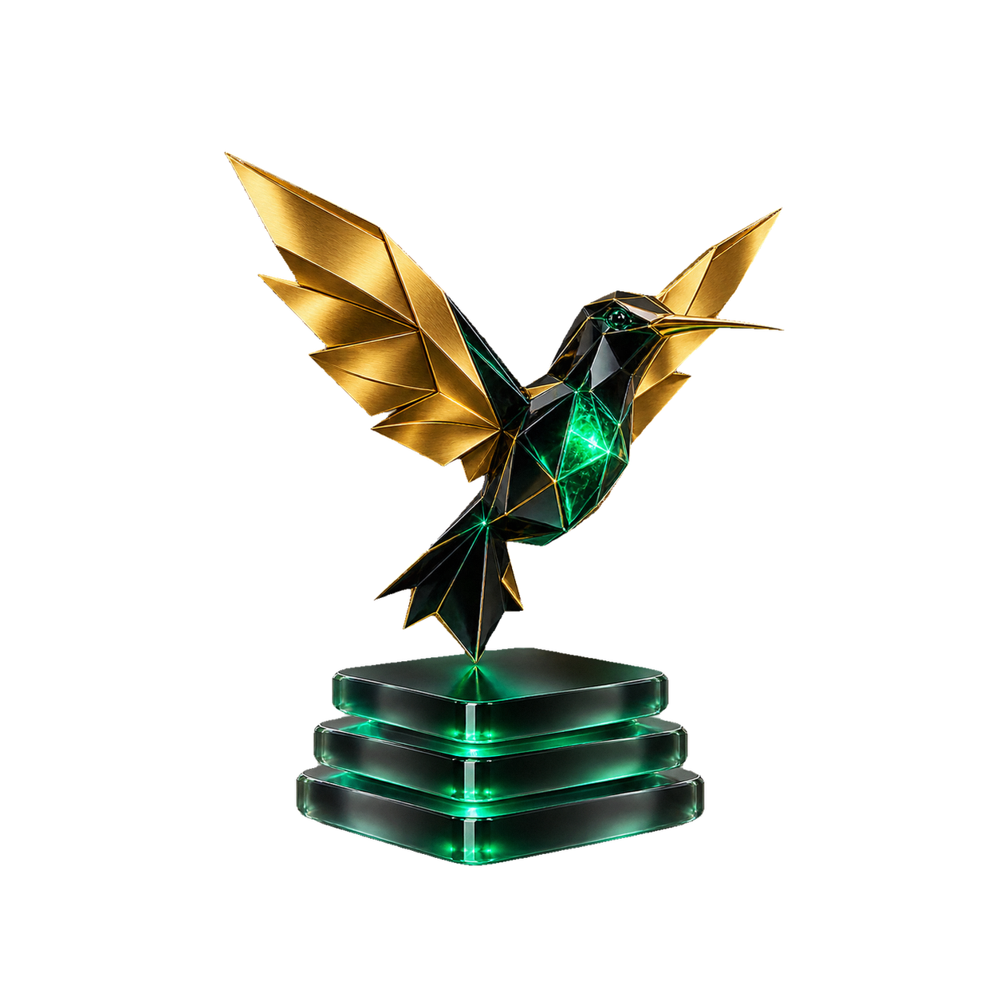

Диагностика потерь
Бесплатно: стоимость рутины, свободная мощность и одно узкое место
Открыто · бесплатноОцените рутину за две минуты и найдите одно узкое место. Бесплатно доступна диагностика, практические модули откроются после подтверждённой оплаты.

Бесплатно: стоимость рутины, свободная мощность и одно узкое место
Открыто · бесплатноЗнания проекта и роли команды
Закрыто · платный доступ от 990 ₽Материалы и контроль качества
Закрыто · платный доступ от 990 ₽Путь от интереса к платному продукту
Закрыто · платный доступ от 990 ₽Коммерческий процесс и передачи
Закрыто · платный доступ от 990 ₽Приёмка, интеграции и развитие
Закрыто · платный доступ от 990 ₽Практикум на 3 вечера: 990 ₽. Мастер-группа: 79 990 / 119 990 / 199 990 ₽. B2B: 300 000–600 000 ₽. Модули 02–06 не открываются от кодового слова, скачивания PDF или изменения адреса страницы
Четыре шага: ситуация, экономика, узкое место и готовность. Получите расчёт и понятный маршрут без вопросов о бюджете покупки
100 − сумма шести оценок / 12 × 100. Чем выше, тем устойчивее ваш процесс
Передача боту недоступна вне поддерживаемого Telegram-сценария. Можно скачать расчёт; он не отправится автоматически
Это самодиагностика, а не обещание дохода. Свободные часы становятся денежным эффектом только при реальном использовании. Проверьте гипотезу на одном пилоте до покупки внедрения